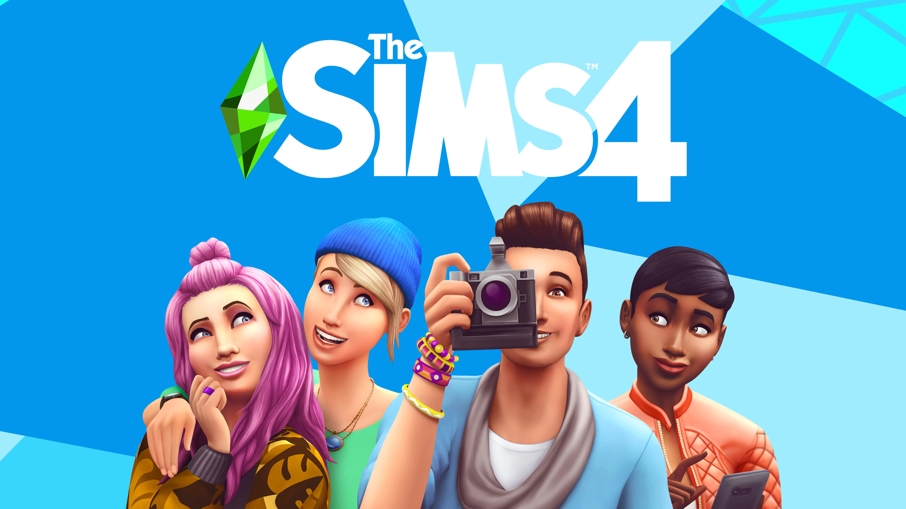

1 / 4

The Sims (2000)
2 / 4
The Sims 2 (2004)
3 / 4
The Sims 3 (2009)
4 / 4

The Sims 4 (2014)
The Sims é uma série de jogos eletrônicos de simulação de vida real criado pelo designer de jogos Will Wright e produzida pela Maxis. O primeiro jogo da série, The Sims, foi lançado em 4 de fevereiro de 2000. Os jogos da série The Sims são, em grande parte, jogos sandbox, pois não possuem objetivos definidos (exceto alguns pacotes de expansão posteriores e versões de console que introduziram esse estilo de jogo). O jogador cria pessoas virtuais chamadas "Sims", e administra suas necessidades, humores e desejos. Os jogadores podem colocar seus Sims em casas pré-construídas ou construí-las do zero. Também é possível construir lotes comunitários, como praças, bares e restaurantes. Cada pacote de expansão aumenta as possibilidades de seu respectivo jogo base. O jogo atraiu legiões de fãs, devido a sua simplicidade e objetividade. Os jogos foram portados e convertidos para diversas plataformas, incluindo Nintendo, computadores, celulares, Playstation, GameBoy Advance, GameCube, Android, iOS e Xbox.